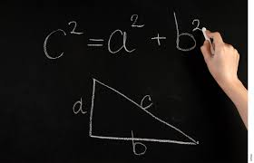

|
|  |
Wow, I just flew in from planet Micron. It was a long flight, but well worth it to get to spend time with you! |
The first thing Tom told me was that you can measure things using two different systems: Metric and US Standard.
Today is my day to learn Metric !
Tom says that if I understand 10, 100, and 1000 then I will have a very easy time learning the metric system. I wish I had ten fingers!